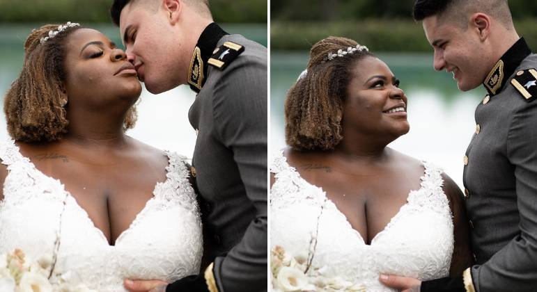
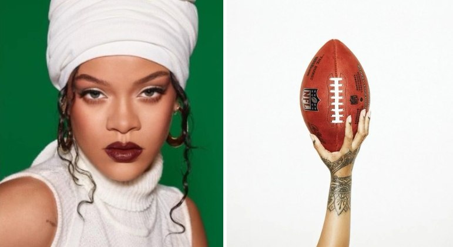

Jojo Todynho diz não se arrepender de ter casado!
Jojo Todynho falou do fim do casamento com Lucas Souza. Na tarde desta segunda-feira (7), a cantora gravou Stories para agradecer o apoio que recebeu após a separação. Ela aproveitou para comentar o divórcio e disse não se arrepender de ter se casado.
Ler mais
Perlla conta que amigos se afastaram dela após prisão do marido.
Perlla desabafou sobre amizades nesta segunda-feira (17). A cantora contou que amigos se afastaram dela após a prisão do marido, Patrick Abrahão. O músico foi detido no último dia 19, na Operação La Casa de Papel, que investiga um esquema de pirâmide financeira transnacional.
Ler mais

Rihanna diz que não vai lançar álbum antes do show do intervalo do Super Bowl
"Não vem aí. Super Bowl é uma coisa, músicas novas são outra coisa. Ouviram isso, fãs?", brincou a cantora em entrevista. "Eu sabia que no mesmo segundo em que eu anunciasse meu retorno eles iriam pensar que um novo álbum estaria chegando e eu teria que trabalhar", continuou.
Ler mais